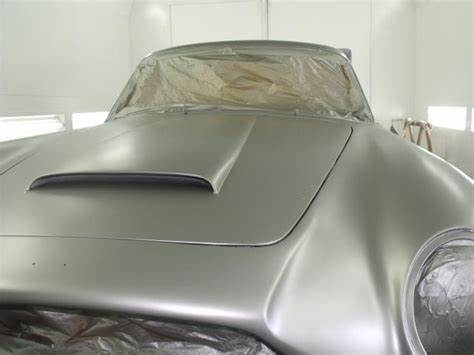

Expériences
Stages
J’ai effectué mon stage de première et deuxième année dans un Garage Autombile AUTO PRO 28 qui est une SASU,
situé au 20 route de Gallardon 28130 Yermenonville, qui est spécialisé dans l'entretien et réparation de véhicules automobiles légers.
Au cours duquel j'ai développé mes compétences professionnelles à travers diverses missions me permettant d'approfondir mes connaissances en programmation web.

Parmi les missions qui m'ont été confiées durant la première année,
j'ai participé à l'installation et à la migration de postes informatiques pour les utilisateurs, ainsi qu'à la réparation de matériel informatique défectueux.
J'ai également été chargé de configurer de nouveaux ordinateurs, d'installer Windows et divers logiciels (delphi, gad garage...), et de prendre des rendez-vous pour les clients du garage.
Par ailleurs, j'ai pu approfondir mon expertise en établissant des devis pour les clients en utilisant le logiciel Gad Garage.
Site AUTO PRO 28
Voici un aperçu du site AUTO PRO 28

Voici un aperçu de la base de données du site AUTO PRO 28
La mission marquant mon stage a été la création d'un site web pour le garage.
Ce projet m'a permis de renforcer mes connaissances et d'acquérir de nouvelles compétences dans le domaine de l'informatique et des technologies de l'information, ainsi que de découvrir le fonctionnement d'une entreprise.
J'ai également pu acquérir de nouvelles compétences en communication et en résolution de problèmes, ce qui m'aidera à réussir dans ma future carrière.
En matière de développement web nous avons utilisés des langages de programmation tels que PHP, HTML, CSS et JavaScript. Grâce à cette expérience, j'ai pu développer mes compétences en programmation et renforcer ma maîtrise des outils et technologies modernes utilisés dans ce domaine.
La création de ce site web a non seulement amélioré la visibilité en ligne du garage, mais m'a également permis de mettre en pratique mes compétences acquises en programmation et de les étendre à un contexte professionnel concret.
Ce stage m'a permis d'acquérir de précieuses compétences techniques et d'apprendre à travailler en équipe, mais aussi de développer mon sens du service client, tout en évoluant dans un environnement professionnel stimulant.